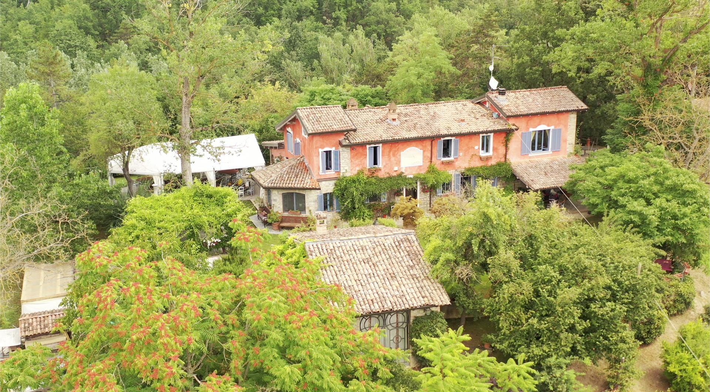

Le colline
Vigne e prati a perdita d'occhio.
Una cascina rossa
sulle colline dell'Oltrepò
uno dei borghi più belli d'Italia

Fortunago è un piccolo borgo sulle colline dell'Oltrepò Pavese, tra i Borghi più belli d'Italia. Una terra di confine a sud della Lombardia, oltre il fiume Po, tra vigne, boschi e sentieri.
Vigne e prati a perdita d'occhio.
Percorsi naturalistici da fare a piedi o in bici.
Tra i Borghi più belli d'Italia: il Melo è proprio qui, a Fortunago.
Luoghi e percorsi naturalistici, itinerari artistici e attività all'aria aperta.
Siamo nell'Oltrepò Pavese, terra di vigne e di cantine.
Via Ca' De' Vecchi, 1 · 27040 Fortunago (PV)


